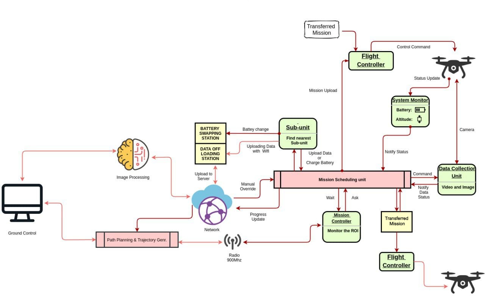

The use of unmanned aerial vehicles (UAVs) in precision agriculture has seen a huge increase recently. This paper defines the various tasks of the UAVs in precision agriculture and models them into an architectural framework. The presented architecture is built on the context that there will be minimal physical intervention to do the tasks defined with multiple coordinated and cooperative UAVs. Various tasks such as image processing, path planning, communication, data acquisition, and field mapping are employed in the architecture to provide an efficient system. The architecture provides an autonomous end-to-end solution, starting from mission planning, data acquisition, and image processing framework that is highly efficient and can enable farmers to comprehensively deploy UAVs onto their lands. Simulation and field tests show that the architecture offers a number of advantages that include fault-tolerance, robustness, developer and user-friendliness.
In this architecture, both the centralized and decentralized approach are used in decision-making, enabling each member UAV to be self-aware and cooperate in executing tasks of monitoring and collecting data for analysis. The mission is generated from the ground station, and loaded to all member UAVs using the centralized approach, whereas control of execution and monitoring different factors is decentralized, allowing each UAV to decide on their own. The architecture includes a ground station, path planning, trajectory generation, image processing unit with deep learning algorithms, data offloading, and optimized battery swapping stations.
The centralized approach allows the control and communication of each UAV to be centralized in the ground station, making it easier to prepare waypoints and allocate paths and trajectories for each UAV. It helps to reduce complications in mission design and reduce communication and network traffic. The decentralized approach empowers UAVs to make decisions on their own, enabling self-monitoring and situational awareness. It provides coordination for multi-agent systems during tasks.
